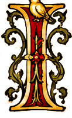
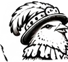
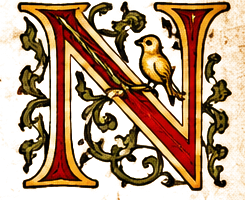

Free hands-on historical games education. Curious travelers welcome.
cat v. canarythe traveling guild · Washington State
A volunteer-led educational nonprofit
History comes alive at our game tables.
Cat v. Canary Foundation researches, recreates and teaches historical board games through free, hands-on demonstrations at Renaissance faires and heritage events in Washington State. Our traveling game house welcomes beginners, families and visitors of all experience levels. Explore our educational resources, learn a game online, or help us bring the pavilion to another community.
Two rivals, one table, and an argument older than either cares to admit.
Folio I · The disagreement
Of a Cat, a Canary, and a Table

t is recorded, though by whose hand no scholar will admit, that the Cat and the Canary first quarreled over a game whose rules were older than either of their family trees.
The Canary, wearing a chain of office altogether too large for his person, declared himself Master of the Table, Keeper of the Pieces, and Sole Interpreter of All Disputed Moves.
The Cat looked at the chain, looked at the board, and made a move the Canary had not considered.
“A questionable move.”✦ THE DISPUTE ✦

“I object!”
Folio II · The traveling house
Concerning a House That Travels

either creature would concede the match. So they packed the board, gathered the pieces, and took their argument upon the road, where any traveler might sit opposite them and offer a better strategy.
In time, their little table became a pavilion. There were cushions, lamps, astonishingly serious discussions about dice, and visitors who intended to stay five minutes and remained an afternoon.
A note in another hand
Should you find their pavilion, enter. Bring curiosity, not a pedigree—and perhaps a willingness to lose gracefully.
We teach by playing. For games whose ancient rules were not fully preserved, our guides explain the difference between historical evidence and modern reconstruction.
Imagine arriving at a Renaissance faire, weary of the crowds, when you discover a pavilion filled with games from places and centuries far removed from your own. Someone makes room at the table. Someone else offers to teach you a game whose players lived thousands of years ago.
Cat v. Canary Foundation is a Washington-based 501(c)(3) educational nonprofit (EIN 33-4166947). Our volunteer-led Guild researches, recreates, and teaches historical games at public events. There are no Guild admission fees, no dues, and no experience requirements.
The Cat and Canary's arguments are fiction. The welcome, history, and games are real.
We bring the traveling game house to historical events in Washington, including the Washington Midsummer Renaissance Faire near Monroe. Check the event organizer for current dates and admission details.
We welcome questions about accessibility, demonstrations, volunteers, and historical games.